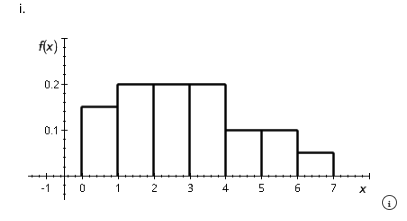

Chapter 8 Assignments
Assignment exercises and answers
Section A: Chapter 8 Assignment
Exercise 08-016 Algo (Probability Density Functions)
The following density function describes the random variable X.
f(x) = {
0.15 0 < x ≤ 1
0.20 1 < x ≤ 4
0.10 4 < x ≤ 6
0.05 6 < x ≤ 7
}
(a) Graph the density function.

Figure: Correct density function graph
Correct Answer: i
(b) Calculate the probability that X is less than 5.5.
0.90
(c) Calculate the probability that X is greater than 2.5.
0.55
(d) What is the probability that X lies between 1 and 6.5?
0.825
Exercise 08-047 Algo (Normal Distribution)
According to a survey, the mean student loan at graduation is $30,000. Suppose that student loans are normally distributed with a standard deviation of $4,000. A graduate with a student loan is selected at random. Find the following probabilities.
(a) the loan is greater than $34,000
0.1587
(b) the loan is less than $28,000
0.3085
(c) the loan falls between $26,000 and $37,200
0.8054
Exercise 08-080 Algo (Normal Distribution)
Most restaurants suggest that tips should exceed 18%. Suppose tips are a normally distributed random variable with a mean of 12% and a standard deviation of 4%. Determine the tip amount that is exceeded only by the top 1%.
$21.32
Exercise 08-082 Algo (Normal Distribution)
The debt-to-income ratio is an important economic indicator. A large ratio may indicate that a particular household’s debt is unsustainable. Assume that this ratio is normally distributed with a mean and standard deviation of 1.4 and 0.6, respectively. Determine the 95th and 99th percentiles.
95th percentile
2.39
99th percentile
2.80
Exercise 08-106 Algo (Exponential Distribution)
The manager of a supermarket tracked the amount of time needed for customers to be served by the cashier. The manager concluded that the checkout times are exponentially distributed with a mean of 9 minutes. What proportion of customers require more than 12 minutes to check out?
0.2636
Exercise 08-111 Algo (Other Continuous Distributions)
Use the t table to find the following values of t.
(a) t0.10,5
1.476
(b) t0.10,26
1.315
(c) t0.025,73
1.993
(d) t0.05,165
1.654
Exercise 08-118 Algo (Other Continuous Distributions)
Use the χ2 table to find the following values of χ2.
(a) χ20.90,16 (Round your answer to two decimal places.)
23.5
(b) χ20.01,60 (Round your answer to one decimal place.)
88.4
(c) χ20.10,3 (Round your answer to two decimal places.)
6.25
(d) χ20.99,80 (Round your answer to one decimal place.)
54.0